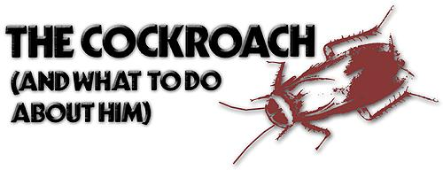

Although cockroach, infestation is usually thought of as mainly an urban problem, many a rural dweller knows from hard experience that "la cucaracha" can survive-and survive well...most any place humans live. Whether you live in the city or the country, however, there are ways to deal with these bothersome pests.
The first?and most direct?approach to killing the critters is simply to step on them (or swat 'em with a rolled?up newspaper). This method is quick, effective, and (assuming you care about such things) probably the most humane way to put the beasties to sleep. Unfortunately, though, the technique doesn't do anything to eliminate hidden multitudes of the pests. (And?as a rule these bugs do tend to come in large, hidden masses.)
If you're plagued by large swarms of cockroaches, your first thought may be to call an exterminator . . . but think again. Not only is pest control service expensive, but?if you live in an apartment and the exterminator doesn't fumigate every unit in your building -the roaches will simply move next door until the fumes die down, then come back (along with their new friends) to your place.
Then too, nine times out of ten you have no way of knowing what kind of poison the exterminator is using. (Sometimes even he doesn't know.) Bear in mind that anything which will kill insects will kill humans. . . it just fakes a larger dose.
Of course, there are poisons and there are poisons. Some naturally occurring bug killers?such as rotenone and pyrethrum (which are derived from derris and chrysanthemum, respectively)-are biodegradable and fairly nontoxic to humans. (They can kill you . . . but it'd take a massive dose of either one to do so.) Ask your garden supply store about rotenone and pyrethrum.
Then again, if you don't much like the idea of dusting or spraying your apartment or house with toxic chemicals, you may want to put out a small amount of poison bait for the roaches to nibble on. Frequently, sodium fluoride is recommended for this purpose, since roaches will walk on it, lick it off their feet (yes, these insects clean themselves just as cats do), and?shortly thereafter?die. In all honesty, though, I haven't had much success with this method . . . and (because sodium fluoride is highly poisonous) it definitely should NOT be used by anyone with pets or small children.
A mixture of borax and sugar will also kill cockroaches . . . but again, this is something that should not be used in a dwelling where dogs, cats, or infants live.
But there is a way! Even for those of you who do have youngsters and/or pets. The most effective (and safest) way to exterminate roaches is by putting out dishes of baking soda. (Yep, plain ole bicarbonate of soda.) When the slender brown bugs consume even the tiniest amount of this substance, they get gassy . . . and?since they can't burp?their innards explode. (Mix a little sugar with the baking soda and set the mixture behind the refrigerator. Gets 'em every time!)
No matter what you do, of course, you won't be able to eliminate all cockroaches from your abode once and forever . . . but you can kill most of the pestiferous little insects most of the time. So go to it . . . and good hunting!
|
 |
|
|